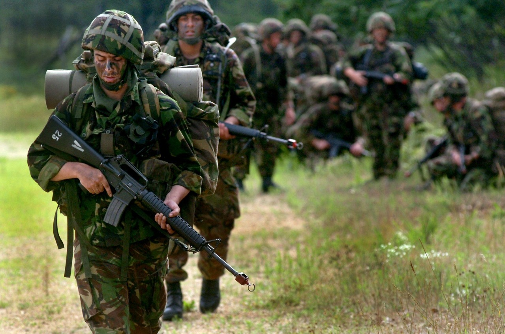

SOLDIER
What is a soldier?
An Army officer or a soldier is an individual working in Indian Armed Forces with the power and authority to run and perform certain functions within the force.
Types of soldier
1. ARMY
o Field Marshal: The highest attainable rank, held by only two officers in Indian Army history.
o General: The Chief of Army Staff typically holds this rank.
o Lieutenant General: A high-ranking officer responsible for commanding corps and divisions.
o Major General: Commanding divisions or holding senior staff appointments.
o Brigadier: Responsible for a brigade, a combined-arms unit.
o Colonel: Commanding a regiment or serving in senior staff roles.
o Lieutenant Colonel: Second-in-command of a battalion or holding staff positions.
o Major: Commanding companies or working in staff capacities.
o Captain: Leading platoons or serving as company officers.
o Lieutenant: Entry-level commissioned officer position.
o Junior Commissioned Officers (JCOs):
o Subedar Major: The highest JCO rank, responsible for leadership and administration.
o Subedar: Assisting in leadership and commanding subunits.
o Naib Subedar: A key link between officers and soldiers.
o Other Ranks (Non-Commissioned Officers & Soldiers):
o Company Quarter Master Havildar (CQMH): Responsible for logistical and administrative functions.
o Havildar: In charge of small units and mentoring soldiers.
o Naik: Leading small teams and assisting Havildars.
o Lance Naik: Entry-level position for soldiers.
o Sepoy: The initial rank for a soldier.
2. NAVY Officer Sailors
o Commission Worthy (CW) scheme
o Special Duties (SD) scheme
3. AIR FORCE
Commissioned Officers
Personnel below Officer Ranks (PBOR)
Aircraftsman ⇒ Leading Aircraftsman ⇒ Corporal ⇒ Sergeant ⇒ Junior Warrant Officer ⇒ Warrant Officer ⇒ Master Warrant Officer
How to become a soldier?
There are mainly two ways through which candidates can join the Indian Army after the 12th. They are as follows :
1. National Defense Academy
2. Technical Entry Scheme ( TES)
National Defense Academy
The National Defense Academy is the Joint Defence Service Training Institute of the Indian Armed Forces. Here all the army aspirants for the Indian Army, the Indian Navy and the Indian Air Force train together before they move on to their respective training academies for further training. The selection procedure for candidates to enter into these prestigious academies involves :
• Clearing the NDA written exam which is conducted by UPSC
• Clearing the Services Selection Board Interview Round
• On clearing the Interview Round, the candidate must also clear the Medical Test.
On the basis of these three rounds, the final merit list is posted and the selected candidates are trained for a period of 3 years before they are sent to their respective training academies for 1-year training after which they are granted a commission. The candidates also get the opportunity to earn a full-time undergraduate degree in BA, BSc or BCs. Apart from their academic training, candidates are also given extensive training in outdoor activities such as drills, and PT along with one foreign language up to B1 level.
Also, it is important to note that only male unmarried candidates between the ages of 16 ½ and 19 ½ can apply for this academy. They must also pass their 12th from a recognised university or board.
Technical Entry Scheme (TES)
Candidates can also join the Indian Army by giving the Technical Scheme Examination. Only unmarried male candidates who have passed their 12th standard in physics, chemistry and mathematics can apply for this examination. Here, the candidates are assessed on the basis of their 10 + 2 scores after which they will be required to appear for an interview conducted by the Services Selection Board.
The selected candidates are then enrolled in a B.E Course in a stream of their choice and they are trained for a period of 4 years for the rank of lieutenant in the army. On completion of the course, the cadet will be granted a permanent commission in the Army and will be given the rank of lieutenant.